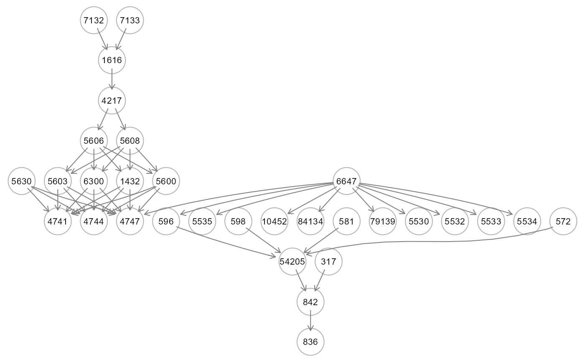

The function computes a formal test for the significance of neural network input nodes, based on a linear relationship between the observed output and the predicted values of an input variable, when all other input variables are maintained at their mean (or zero) values, as proposed by Mohammadi (2018).
Arguments
- object
A neural network object from
SEMdnn()function.- thr
A numeric value [0-1] indicating the threshold to apply to the t-test values to color the graph. If thr = NULL (default), the threshold is set to thr = 0.5*max(abs(t-test values)).
- verbose
A logical value. If FALSE (default), the processed graph will not be plotted to screen.
- ...
Currently ignored.
Value
A list of three object: (i) est: a data.frame including the connections together with their t_test weights, (ii) gest: if the outcome vector is given, a data.frame of t_test weights for outcome lavels, and (iii) dag: DAG with colored edges/nodes. If abs(t_test) > thr and t_test < 0, the edge is inhibited and it is highlighted in blue; otherwise, if abs(t_test) > thr and t_test > 0, the edge is activated and it is highlighted in red. If the outcome vector is given, nodes with absolute connection weights summed over the outcome levels, i.e. sum(abs(t_test[outcome levels])) > thr, will be highlighted in pink.
Details
A neural network is trained, taking into account the number of hidden layers, neurons, and activation function. Then, network's output is simulated to get the predicted values of the output variable, fixing all the inputs (with the exception of one nonconstant input variable) at their mean values. Subsequently, the network's predictions are stored after this process is completed for each input variable. As last step, multiple regression analysis is applied node-wise (mapping the input DAG) on the observed output nodes with the predicted values of the input nodes as explanatory variables. The statistical significance of the coefficients is evaluated using standard t-student values, which represent the importance of the input variables.
References
S. Mohammadi. A new test for the significance of neural network inputs. Neurocomputing 2018; 273: 304-322. https://doi.org/10.1016/j.neucom.2017.08.007
Author
Mario Grassi mario.grassi@unipv.it
Examples
# \donttest{
if (torch::torch_is_installed()){
# Load Sachs data (pkc)
ig<- sachs$graph
data<- sachs$pkc
data<- log(data)
#...with train-test (0.5-0.5) samples
set.seed(123)
train<- sample(1:nrow(data), 0.5*nrow(data))
#ncores<- parallel::detectCores(logical = FALSE)
dnn0<- SEMdnn(ig, data[train, ], outcome = NULL, algo= "nodewise",
hidden = c(10,10,10), link = "selu", bias = TRUE,
nboot = 0, epochs = 32, verbose = TRUE)
st<- getSignificanceTest(dnn0, thr = NULL, verbose = FALSE)
gplot(st$dag, l="circo")
table(E(st$dag)$color)
}
#> DAG conversion : TRUE
#> Running SEM model via DNN...
#>
#> node 1 : zAkt
#> train val base
#> 0.5966021 Inf 0.9988675
#>
#> node 2 : zErk
#> train val base
#> 0.7381413 Inf 0.9988675
#>
#> node 3 : zJnk
#> train val base
#> 0.8443169 Inf 0.9988675
#>
#> node 4 : zMek
#> train val base
#> 0.4791432 Inf 0.9988675
#>
#> node 5 : zP38
#> train val base
#> 0.4424686 Inf 0.9988676
#>
#> node 6 : zPIP2
#> train val base
#> 0.5484106 Inf 0.9988675
#>
#> node 7 : zPKC
#> train val base
#> 0.9163345 Inf 0.9988676
#>
#> node 8 : zPlcg
#> train val base
#> 0.8234547 Inf 0.9988675
#>
#> node 9 : zRaf
#> train val base
#> 0.9082495 Inf 0.9988676
#> done.
#>
#> DNN solver ended normally after 288 iterations
#>
#> logL:-29.103546 srmr:0.274008

#>
#> gray50 red2 royalblue3
#> 13 3 2
# }